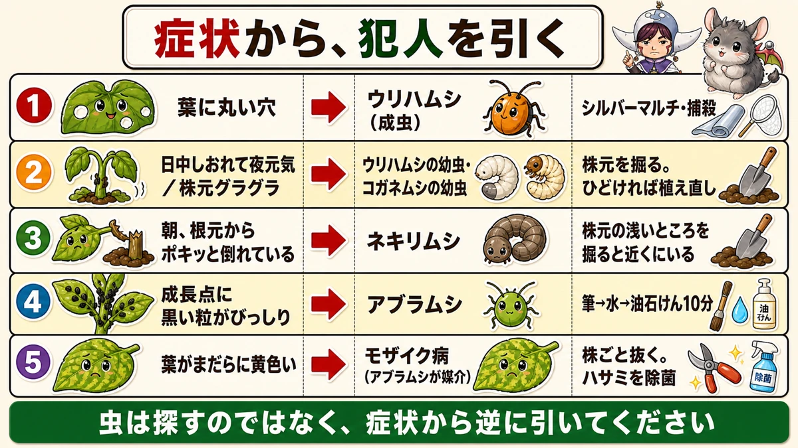
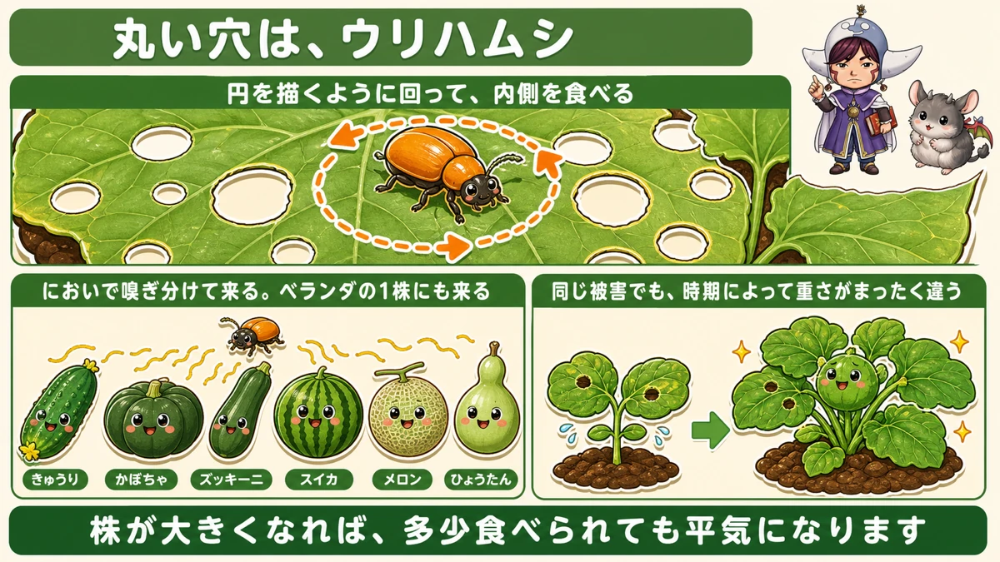
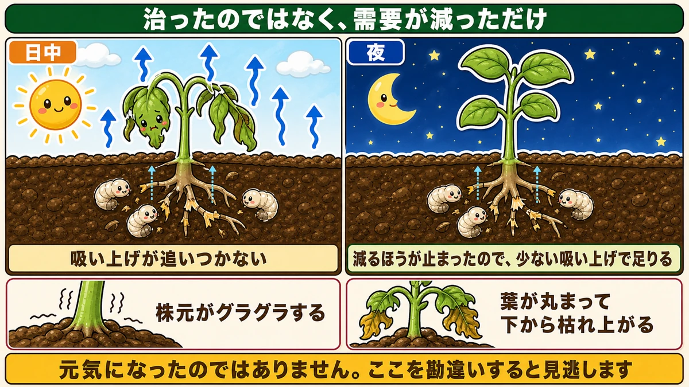
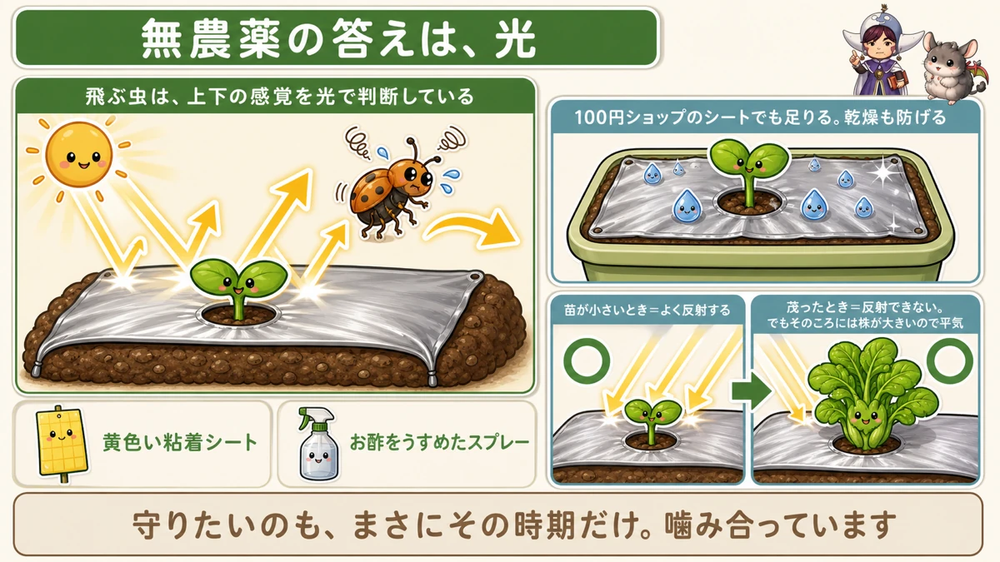

日中しおれて、夜に元気なら🐛 根がやられています

🗨️「葉に丸い穴が開いている」
🗨️「1株だけ、なんだか元気がない」
🗨️「朝見たら、苗が根元から倒れていた」
どうも、8150（えいこう）です🌱 家庭菜園歴8年、理科の教員免許を持っていて、有機・無農薬で野菜を育てています。
4月から5月は、苗がいちばん弱い時期です。
そして虫が動きはじめる時期でもあります。ただ、虫を探して見つけるのは、正直かなり難しい。小さいですし、隠れていますし、夜だけ出てくるものもいます。
先に、この記事でいちばん言いたいことを言っておきます。
★虫は探すのではなく、症状から逆に引いてください。
葉に丸い穴が開いていたら、犯人はほぼ決まっています。日中しおれて夜に元気なら、地面の下で何かが起きています。★症状には、それぞれ決まった犯人がいます☺️

なぜ「今だけ」の話なのか
大きくなれば、気にしなくてよくなる
先にお伝えしておきたいことがあります。
★この記事の内容は、苗が小さいあいだだけの話です。
株がしっかり育ってしまえば、葉を多少食べられても平気になります。葉の枚数が増えているので、何枚か減っても光合成が続けられるからです。
でも★植えたばかりの苗は、葉が4枚しかない。そこから2枚食われたら、光合成の能力が半分になります。
★同じ被害でも、時期によって重さがまったく違うんです。
4月から5月を越えれば、あとは楽
だから、この時期だけ集中して見てください。
★逆に言えば、6月に入って株が大きくなったら、そこまで神経質にならなくて大丈夫です。虫を全部いなくすることはできませんし、その必要もありません。
真夏の虫については、前に別の記事でまとめました。★今日は「苗が小さいあいだ」に絞ってお話しします。
症状①：葉に、丸い穴
犯人はウリハムシです
葉に、コンパスで描いたような★きれいな丸い穴が開いている。
これはほぼ間違いなく、ウリハムシです。オレンジ色の小さな甲虫で、体長は7mmくらい。

★食べ方に特徴があります。円を描くようにぐるっと回って、その内側を食べる。だから丸い穴が残ります。
★丸い穴を見たら、ウリハムシと思って構いません。
ウリ科なら、必ず来ます
狙われるのは、ウリ科の野菜です。
- きゅうり
- かぼちゃ
- ズッキーニ
- スイカ
- メロン
- ひょうたん
★このどれかを育てているなら、必ず来ます。
しかも★においで嗅ぎ分けてやってきます。ベランダで1株だけ育てていても、ちゃんと見つけて飛んできます。畑からずいぶん離れていても、です。
花も実も食べます
葉ばかり注目されますが、★ウリハムシは花や実も食べます。
葉のほうが好きなのか、たいていは葉を食べているのですが、実の表面をかじられると見た目が悪くなります。★きれいに穫りたい方は、対策する価値があります。
★症状②：日中しおれて、夜に元気
これがいちばん大事なサインです
畑を見ていて、1株だけ元気がない。
でも夕方にもう一度見たら、しゃんとしている。
★これは、根がやられているときの典型的なサインです。

なぜそうなるのか
理屈は単純です。
日中は気温が高く、葉から水がどんどん蒸発します。根が健康なら、その分を吸い上げて補えます。
でも★根が食われていると、吸い上げが追いつきません。だから昼にしおれます。
日が沈むと、蒸発が止まります。★減るほうが止まるので、少ない吸い上げでも足りるようになる。だから夜は元気に見えるんです。
★元気になったのではなく、需要が減っただけです。ここを勘違いすると「治った」と思って見逃します。
犯人はウリハムシの幼虫です
そして意外なのですが、★ウリハムシは成虫より幼虫のほうが危険です。
成虫は株元の土に卵を産みます。孵ったうじ虫のような幼虫が、★根と、根元の茎を食べます。
被害が出るのは★5月から10月。ちょうど夏野菜の時期とまるかぶりです。
ほかのサイン、2つ
しおれ以外にも、こういう症状が出ます。
★株元がグラグラする
まわりの株はしっかり立っているのに、その株だけ手で触るとぐらつく。★根と根元の茎が食われて、支えを失っています。
★葉が丸まって、下から枯れ上がる
水が上がらないので、下の葉から順に枯れていきます。
掘ってみると分かります
疑わしいときは、★株元の土を少し掘ってみてください。
根元の茎がボロボロ崩れて、穴や隙間が開いていることがあります。★その中に小さな白い幼虫がいます。
私が資料で見た畑では、ほんの数ミリの幼虫が何十匹も入っていました。あの小ささで、あれだけの株を枯らすのかと驚きました。
★プランターほど、被害が大きい
覚えておいてほしいことがあります。
★プランターや袋栽培のような、閉じた空間ほど被害が大きくなります。
畑なら、幼虫は土の中を移動できます。他にも根はたくさんある。でもプランターの中には、その株の根しかありません。★逃げ場も、分散もないんです。
ベランダで育てている方は、とくに気をつけてください。
ここまで来たら、植え直し
正直に書きます。
★根と根元の茎が食われてグラグラになった株は、回復しません。
水も養分も吸えないので、そのまま枯れます。★早めに見切って、新しい苗を植えたほうが結果的に早いです。
4月5月なら、まだ植え直しが間に合います。★だからこの時期に見つけることに意味があります。
症状③：朝、根元から倒れている
犯人はネキリムシ
昨日まで元気だった苗が、朝見たら根元でポキッと折れて倒れている。
★ネキリムシです。ヨトウガなどの幼虫で、夜のあいだに活動します。
名前のとおり、株元を噛み切ります。食べるためというより、切り倒して倒れた葉を食べるためのようです。
すぐ近くにいます
やられた株を見つけたら、★その株元の土を浅く掘ってみてください。
ネキリムシは遠くへ行きません。★たいてい半径10cmくらいの、浅いところに丸まって隠れています。日中は土の中でじっとしているので、朝のうちに探すと見つかります。
見つけたら取り除く。それだけで、その周辺の被害は止まります。
★冬の作業が効いてきます
前に、寒起こしの話をしました。
★冬に土を掘り返して塊のまま置いておくと、土の中で越冬していたネキリムシが表面に出て、凍死したり鳥に食べられたりします。
★春の被害の量は、冬にどれだけ掘ったかで変わります。今年間に合わなかった方は、来年の冬に思い出してください。
症状④：成長点に、黒い粒
アブラムシです
新芽のあたりに、黒や緑の小さな粒がびっしりついている。アブラムシです。
対策は前にくわしくお話ししました。★筆で払う → 水で流す → 油石けん水を10分。この3段階です。
★大事なのは、1回で終わりにしないこと。必ず取り残しがあるので、見るたびに落とします。
★アブラムシは病気を運びます
もうひとつ、忘れてはいけないことがあります。
★アブラムシはモザイク病というウイルスを運びます。
葉がまだらに黄色くなって、生育が止まる病気です。★ウイルスなので、治す方法はありません。見つけたら、その株ごと抜きます。
そして★作業に使ったハサミは、必ずアルコールで拭いてください。拭かずに次の株を切ると、自分で病気を配って回ることになります。
★無農薬の答えは「光」です
ウリハムシは、光の反射を嫌う
さて、ウリハムシの対策です。
農薬を使わないなら、いちばん確実なのがこれです。
★シルバーマルチを張ってください。

表面が銀色のマルチです。★日光を反射するので、ウリハムシが近寄れなくなります。
飛んでいる虫は、上下の感覚を光で判断しています。★下からも光が来ると、どちらが空か分からなくなって、そこに降りられないんです。
プランターなら100円ショップで
畑にマルチを張るほどではない、という方。
★100円ショップにシルバーのシートが売っています。プランターの土の上に敷くだけで、同じ効果があります。
★ついでに乾燥も防げます。夏の水やりが楽になるので、一石二鳥です。
★「小さいうちだけ効く」でちょうどいい
ひとつだけ注意点があります。
★株が茂ってくると、葉が光をさえぎって反射できなくなります。だんだん効かなくなる。
でも、これでいいんです。
★そのころには株が大きくなっていて、多少食べられてもびくともしません。
シルバーマルチは「苗が小さい時期だけ効く道具」です。そして★守りたいのも、まさにその時期だけ。噛み合っています。
ほかの手
- ★黄色い粘着シート … 飛んできた虫が貼りつきます
- ★お酢をうすめたスプレー … においを頼りに来る虫なので、においで返すという考え方です
どちらも農薬ではありません。組み合わせて使えます。
見つける習慣
この記事の要点
- ★虫は探すより、症状から逆に引くほうが早い
- ★苗が小さいあいだだけの話。株が大きくなれば気にしなくていい
- 葉4枚の苗が2枚食われると★光合成の能力が半分になる
- ★葉の丸い穴＝ウリハムシ。円を描くように食べる
- ★ウリ科ならにおいを嗅ぎ分けて必ず来る。ベランダの1株にも来る
- ★花や実も食べる
- ★★日中しおれて夜元気＝根がやられているサイン
- 理由は★夜は蒸発が止まって、少ない吸い上げでも足りるから。治ったのではない
- ★ウリハムシは成虫より幼虫が危険。根と根元の茎を食べる。被害は5月〜10月
- ほかのサイン＝★株元がグラグラ／★葉が丸まって下から枯れ上がる
- ★プランターなど閉じた空間ほど被害が大きい
- ★グラグラまで来たら回復しない。早めに植え直す
- ★朝、根元から倒れていたらネキリムシ。★株元の浅いところに丸まっている
- ★冬の寒起こしをやっておくと、春の被害が減る
- ★成長点の黒い粒はアブラムシ。筆→水→油石けん10分
- ★アブラムシはモザイク病を運ぶ。★ハサミは株ごとに除菌する
- ★無農薬の答えはシルバーマルチ。虫は上下を光で判断しているので降りられなくなる
- ★プランターなら100円ショップのシルバーシートで足りる。乾燥も防げる
- ★茂ると効かなくなるが、そのころには株が大きいので問題ない
全部やろうとしなくて大丈夫です。まずは明日の朝、いちばん元気のない株を1つ選んで、株元をそっと掘ってみてください。それが虫を見つける、いちばん確実な方法です🐛
次回は、追肥の話。どの野菜に、いつ、どれだけ足すのかを1枚にまとめます🌱
ここまで読んでくださって、ありがとうございました。
防虫シルバーマルチ
光を反射して、アブラムシとウリハムシの向きを狂わせます。無農薬でいちばん効く「光」の対策です。
![[商品価格に関しましては、リンクが作成された時点と現時点で情報が変更されている場合がございます。]](https://hbb.afl.rakuten.co.jp/hgb/55e77bb2.a973bab2.55e77bb3.28befe28/?me_id=1223148&item_id=10001699&pc=https%3A%2F%2Fthumbnail.image.rakuten.co.jp%2F%400_mall%2Fideshokai%2Fcabinet%2Fam425.jpg%3F_ex%3D240x240&s=240x240&t=picttext "[商品価格に関しましては、リンクが作成された時点と現時点で情報が変更されている場合がございます。]")

防虫ネット（1mm目）
苗が小さい4月から5月だけの勝負です。この時期さえかけておけば、あとは要りません。

アーチ支柱
ネットを浮かせるための骨です。葉に触れていると、その上から卵を産まれます。

不織布
ネットより軽く、そのままかけられます。遅霜と虫の両方を兼ねられます。
![[商品価格に関しましては、リンクが作成された時点と現時点で情報が変更されている場合がございます。]](https://hbb.afl.rakuten.co.jp/hgb/56bc237a.e97551b1.56bc237b.2513ed10/?me_id=1310260&item_id=10000879&pc=https%3A%2F%2Fthumbnail.image.rakuten.co.jp%2F%400_mall%2Fdiokasei%2Fcabinet%2F007fusyokufu%2F12g%2Fimgrc0092049705.jpg%3F_ex%3D240x240&s=240x240&t=picttext "[商品価格に関しましては、リンクが作成された時点と現時点で情報が変更されている場合がございます。]")
あわせて読みたい